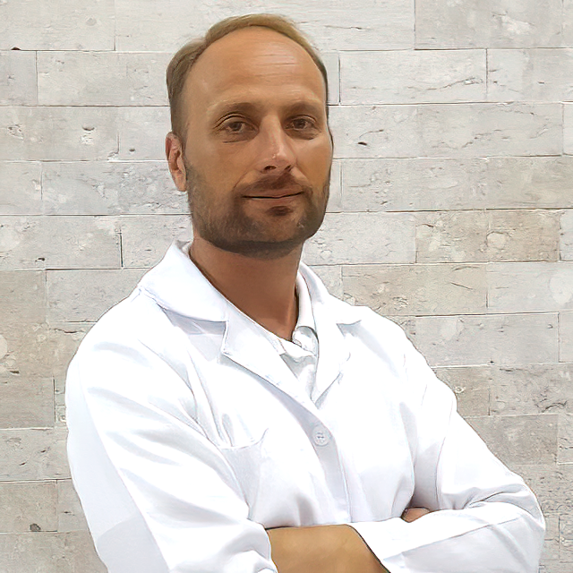

Professor e Supervisor de Ambulatório
- Instituição: ETAME
- Período: 2007 – 2010
- Descrição: Atuação como professor e supervisor de ambulatório, orientando alunos e supervisionando atendimentos clínicos.
Atendimento humanizado, integrativo e voltado ao equilíbrio físico, emocional e energético.

Com sólida formação na área da saúde e experiência clínica, Rodrigo Andrade dedica-se ao cuidado integral do paciente, unindo conhecimentos da Medicina Tradicional Chinesa, Acupuntura, Hipnose, Fitoterapia Chinesa e técnicas complementares.
Seu trabalho busca compreender as causas dos desequilíbrios do organismo, promovendo saúde, bem-estar, qualidade de vida e equilíbrio de forma natural, acolhedora e personalizada.